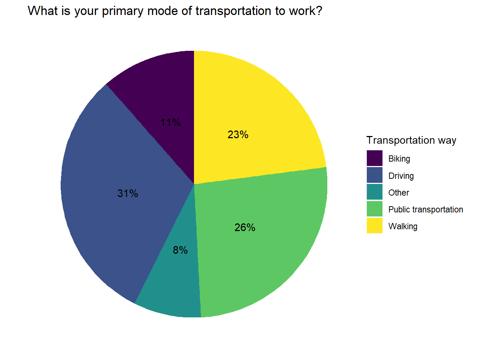

Code
if (!require(pacman)) install.packages("pacman")
pacman::p_load("tidyverse", "ggplot2", "plotly")if (!require(pacman)) install.packages("pacman")
pacman::p_load("tidyverse", "ggplot2", "plotly")df <- read_csv("R Workshop Survey.csv")
head(df)# A tibble: 6 × 4
Timestamp Username How often do you e…¹ What …²
<chr> <chr> <chr> <chr>
1 2023/02/21 12:19:20 PM AST mkamarapu@umass.edu Rarely Public…
2 2023/02/21 12:19:29 PM AST mkamarapu@umass.edu Sometimes Public…
3 2023/02/21 12:19:36 PM AST mkamarapu@umass.edu Never Walking
4 2023/02/21 12:19:48 PM AST mkamarapu@umass.edu Rarely Other
5 2023/02/21 12:59:02 PM AST niyatisharma@umass.edu Rarely Walking
6 2023/02/21 12:59:15 PM AST niyatisharma@umass.edu Sometimes Driving
# … with abbreviated variable names ¹`How often do you exercise?`,
# ²`What is your primary mode of transportation to work?`A <- df %>%
group_by(`How often do you exercise?`) %>%
count() %>%
ggplot(aes(y = n, x = `How often do you exercise?`, fill = `How often do you exercise?`)) +
geom_bar(position = "dodge", stat = "identity") +
ggtitle("How often do you exercise?") +
xlab("Frequency on weekly basis") +
ylab("Count") +
theme_classic() +
guides(fill = "none")
ggplotly(A)df %>%
group_by(`What is your primary mode of transportation to work?`) %>%
count() %>%
ggplot(aes(x = "", y = n, fill = as.factor(`What is your primary mode of transportation to work?`))) +
geom_bar(stat = "identity", width = 1) +
coord_polar("y", start = 0) +
labs(title = "What is your primary mode of transportation to work?") +
scale_fill_viridis_d() +
theme_void() +
geom_text(aes(label = paste0(round((n/sum(n))*100), "%")), position = position_stack(vjust = 0.5)) +
guides(fill = guide_legend(title = "Transportation way"))